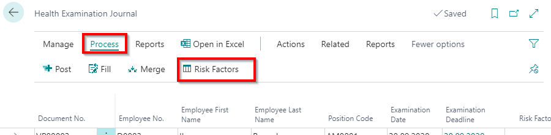

Mandatory health examinations
Defining Risk factors
Each positions has its own risk factors – for the one position can be assigned one or several risk factors. Risk factors are defined in the list Risk Factors.
Each Risk factor contains the following information:
- Code – a unique risk factor identifier;
- Description – risk factor name;
- Type – Environment or Special;
- Examination Periodicity – recurrence of the health examinations.
Health Examination Journal
Information on planned health examinations is stored in the register Health Examination Journal:
- Document No. - a unique record identifier, from the No. Series;
- Employee No. – a code from the list Employee;
- Employee First Name;
- Employee Last Name;
- Position Code – to be completed if there is no employment relationship with potential employee, but employee must be sent to a compulsory health examination according to the risks to a particular position;
- Examination Date – date when the examination has been performed; planned date at the beginning, but when registering the results - actual date;
- Examination Deadline – deadline by which the examination is required; is completed automatically, depends on the position's risk factor periodicity and the last examination date;
- Risk Factors – a code form the list Risk Factors;
- Examination Type – Initial, Extra, Periodical;
- Extra Exam. Reason;
- Document Printed – the mark that the referral is printed.
Health Examination Journal can be completed manually or generating from information available in the system, as well as when hiring a new employee and posting the Personnel order, the first health check will be generated automatically. Personnel orders are described in the chapter Personnel Order.
Manual entries in the Health Examination Journal
By completing the log manually, the information about the risks should be entered through the buttons Process - Risk Factors.

A List Health Exam. Jnl. Risk Factors includes following information:
- Risk Factor Code – a code from the list Risk Factors;
- Risk Factor Description;
- Risk Factor Type – for example, Environment;
- Employee Position No. – employee position code;
- Position Code – a code from the list Positions;
- Position Date From – date from which position is created;
- Risk Factor Date From – date from which the risk factor is created;
- Date From – the latest date of risk factor for employee or position (designed for Printouts, to be able to indicate from which date employee subordinate to this risk)
- Last Exam. Entry Date;
- Last Jnl. Line Date;
- Last Exam. Date;
- Examination Deadline – deadline by which the examination is required; is completed automatically, depends on the position risk factor periodicity and the last examination date;
- Result Code – a code from the list Health Examination Results;
- Result Description.
When entering the field Risk Factor Code, other fields, except the fieldsResult Code and Result Description, will be filled automatically if the risk factors were applied to the position, when creating a position card.
Automatically created entries in the Health Examination Journal
To complete the journal lines automatically, click on the buttons Process - Fill. When generating journal, the risk factor entries are automatically taken from employees' positions. A date for the examinations need to be indicated before the generating the entries.
Journal records can be generated by Employee No, Position Code, Profession Code, Department Code, Risk Factor Code and Risk Factor Type. In the field Date On, needs to be identified the date on which you want to generate the lines. To find out the next test period for the risk factors, The system checks in the health examination records, the date of the previous examination and the employment date of the employee. From this obtained date, using risk factor periodicity, the next examination period is calculated. If this period is before the the date what was identified in the journal fill option, then he specific health examination is added to the journal.
Merging the entries of the Health Examination Journal
If one employee has several risk factors, Then the several health checks are generated at the beginning of each risk factor. In order to merge the health examinations in the journal, if necessary, under one examination, journal has a merge function by pressing on Process - Merge.
This feature combines health examinations of the filtered entries in one by employee numbers. If the user wants to combine only one employee's health examinations, then in the merge filter should be specified the employee number.
As Examination Deadline is indicated the date what is the earliest from the all merged entries
Printout of the Health Examination
When the Health Examination entry is ready in the journal, it is available to print the Health Check referral printout by clicking on Reports - Print document. When document is printed, the checkmark appears in the field Document Printed.
Health Examination Results
When health examination is completed, the result should be entered in the Health Examination journal through the button risk Factors. Choose the appropriate code from the list Health Examination Results.
Health Examination Results includes the folowing fields:
- Code – freely chosen unique identification code;
- description – description of the result.
Posting the Health Examination Journal and entries of the Health Examination
When the results are entered, the Health Examination entries can be posted by clicking on Process - Post. To ensure the historical data on the Health Examination of the employees, all posted data are saved to the register Health Examination Entries. Following fields are available:
- Document No. – A unique record identifier from the No. Series;
- Employee No. – from the list Employees;
- Employee First Name;
- Employee Last Name;
- Employee Position No. - employee position number;
- Position Code – a code from the list Positions;
- Risk Factor Code – a code from the list Risk Factors;
- Risk Factor Description;
- Risk Factor Type - for example, Environment;
- Examination Date – date when the examination was completed;
- Examination Deadline – date limit for examination;
- Examination Type - Initial, Extra, Periodical;
- Extra Exam. Reason;
- Result Code – a code from the list Health Examination Results;
- Result Description;
- Notes;
- Reaction.